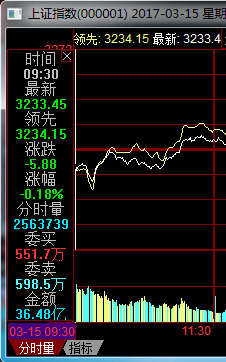
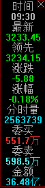
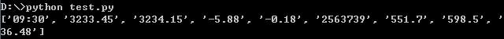

之前写过一篇《从同花顺软件中抓取上证指数成交明细》的博客，其实这一篇也大同小异，只不过是用Python实现的，而且是专门用来抓取分钟级别涨跌值的。
以抓上证指数为例，说一下大致的工作流程。在同花顺中，切换到上证指数的日K线图之后，双击一个蜡烛，就会弹出当天的分时走势：
此时，如果把焦点锁定到分时图所在的窗口上，然后按键盘'right'键，就会出现一个小Bar显示09:30的数据：

接下来每按一次'right'，都会显示下一分钟的数据，直到15:00为止。根据《从同花顺软件中抓取上证指数成交明细》中的实验我们也知道，同花顺里面显示这些数据的字体都是一样的。于是可以是用最最原始的屏幕字符识别（OCR）来把每一个Bar里面的数据“抠”出来。这样，一天的分时数据就有了。
那么采完一天的数据之后，怎么切换到前一天的数据呢？《从同花顺软件中抓取上证指数成交明细》中，我是每一天成交明细采完以后手工切换到上一天。如今我越来越懒了，非得自动不行。方法也是一样的——让后面K线图的窗口获得焦点，然后按一下'left'键，那么成交明细的窗口就切换到上一个交易日了。
======================阶段一：OCR====================
先来解决最核心的屏幕识别吧。屏幕识别的原理可以参考《从同花顺软件中抓取上证指数成交明细》的第一节。本文中我就直接上代码了：
import os
from PIL import Image,ImageFile
class HexinOCR:
def __init__(self):
#图片的名称
filenames=(*[str(n) for n in range(10)],'dot','colon','add','min')
dirname=os.path.dirname(__file__)
#打开图片，并且转换为0-1二维数组
self.__images=tuple([self.__to_binary_map(Image.open(dirname+'\\'+d+'.png')) for d in filenames])
#每个图片对应的字符
self.__digits=(*[str(n) for n in range(10)],'.',':','+','-')
#传入一张图片，识别所有的字符
def recognize(self,im):
if not isinstance(im,(Image.Image,ImageFile.ImageFile)):
raise TypeError('Param <im> is not an image')
text_lst=[]
bm=self.__to_binary_map(im)
w,h=self.__get_binary_map_size(bm)
#逐行遍历
y=0
while y<h:
for x in range(w):
#如果某行存在1，则试图识别
if bm[y][x]!=0:
text,line_h=self.__recognize_line(bm,y)
#确实有文字，则跳过一个行高
if text!='':
y+=line_h
text_lst.append(text)
break
y+=1
return text_lst
#给定一张0-1二维数组和行号，试图识别改行上的字符串
def __recognize_line(self,bm,start_y):
w,h=self.__get_binary_map_size(bm)
text=''
line_h=0
x=0
#遍历每一个x
while x<w:
#穷举每一个字符
for i in range(len(self.__digits)):
sub=self.__images[i]
#如果能够重合，则识别，加上一个字宽
if self.__has_sub_image(bm,x,start_y,sub):
text+=self.__digits[i]
sw,sh=self.__get_binary_map_size(sub)
line_h=max(line_h,sh)
x+=sw
break
x+=1
return text,line_h
#判断在bm的start_x,start_y位置是否存在一张子图和sub重合
def __has_sub_image(self,bm,start_x,start_y,sub):
w,h=self.__get_binary_map_size(bm)
sw,sh=self.__get_binary_map_size(sub)
if start_x+sw>w or start_y+sh>h:
return False
for y in range(sh):
if sub[y]!=bm[start_y+y][start_x:start_x+sw]:
return False
return True
#把图片转换成0-1二维数组
def __to_binary_map(self,im):
w,h=im.size
bm=[[0]*w for i in range(h)]
raw=im.getdata()
for y in range(h):
for x in range(w):
p=raw[y*w+x][0:3]
bm[y][x]=(0 if p==(0,0,0) else 1)
return bm
def __get_binary_map_size(self,bm):
return len(bm[0]),len(bm)
另外14张图片也需要和该py文件放在同一个目录：


比如这样一张图片，存放到D:/test.png：

那么编写这么一个测试用例：
ocr=HexinOCR()
img=Image.open('D:/test.png')
texts=ocr.recognize(img)
print(texts)
可以看到输出：

=======================阶段二：自动操作===================
最核心的OCR解决之后，就只需要能够让程序自动操作就行了。然而说着简单，其实很复杂，因为要考虑的因素太多了。
import os,time,re
import win32api,win32gui,win32con
from PIL import Image,ImageFile,ImageGrab
class HexinFetch:
def __init__(self,bbox_min,bbox_vals):
#获取K线图窗口
kwin_lst=self.__find_wins_by_title('^同花顺\(v\\d+\\.\\d+\\.\\d+\\)')
if len(kwin_lst)==0:
raise IOError('No K line window found')
elif len(kwin_lst)>1:
raise IOError('More than one K line window found: '+str(kwin_lst))
self.__kwin=kwin_lst[0][0]
#获取分时图窗口
twin_lst=self.__find_wins_by_title('.+\(\\d{6}\) \\d{4}-\\d{2}-\\d{2}')
if len(twin_lst)==0:
raise IOError('No tick window found')
elif len(twin_lst)>1:
raise IOError('More than one tick window found: '+str(twin_lst))
self.__twin=twin_lst[0][0]
#获取K线图的Panel
kpanel=self.__get_child_by_ids(self.__kwin,[0xE900])
if kpanel==0:
raise IOError('Cannot get k line panel')
#获取分时图的Panel
tpanel=self.__get_child_by_ids(self.__twin,[0xE801,0])
if tpanel==0:
raise IOError('Cannot get tick panel')
#获取分时图Panel的屏幕坐标
(left,top,right,bottom)=win32gui.GetWindowRect(tpanel)
#计算要截图的矩形的屏幕坐标
self.__bbox_load=(left+35,top+15,left+65,top+30)
self.__bbox_ready=(left,top+15,left+15,top+30)
if not isinstance(bbox_min,(tuple,list)) or len(bbox_min)!=4:
raise TypeError('Param <bbox_min> is not a 4-tuple or 4-list')
self.__bbox_min=(left+bbox_min[0],top+bbox_min[1],left+bbox_min[2],top+bbox_min[3])
if not isinstance(bbox_vals,(tuple,list)):
raise TypeError('Param <bbox_vals> is not a tuple or list')
self.__bbox_vals=[]
for bbox_val in bbox_vals:
if not isinstance(bbox_val,(tuple,list)) or len(bbox_val)!=4:
raise TypeError('Param <bbox_vals> is not a tuple of 4-tuple or 4-list')
self.__bbox_vals.append((left+bbox_val[0],top+bbox_val[1],left+bbox_val[2],top+bbox_val[3]))
self.__ocr=HexinOCR()
#抓取一天的数据，data_lim表示至少在哪天之前，half表示是否只抓取半天
def fetch_day(self,date_lim,half=False):
#挪动到指定的日期
date,last_date=None,None
while True:
date=self.__get_date()
if date<=date_lim:
break
self.__press_key(self.__kwin,'left',0.2,0.5)
date=self.__get_date()
if date==last_date:
time.sleep(5)
last_date=date
#等到分时图加载完毕
while self.__is_bbox_empty(self.__bbox_load):
time.sleep(1)
#等到Bar显示完毕
while True:
self.__press_key(self.__twin,'right',0.5,0.5)
if not self.__is_bbox_empty(self.__bbox_ready):
break
time.sleep(1)
#要抓取的分钟
morning=['%02d:%02d' % (int((m+30)/60)+9,(m+30)%60) for m in range(2*60)]
afternoon=['%02d:%02d' % (int((m+1)/60)+13,(m+1)%60) for m in range(2*60)]
minutes=(*morning,'11:30') if half else (*morning,'11:30',*afternoon)
table=[]
#依次抓取每一分钟
for m in minutes:
while True:
minute=self.__recognize_grab(ImageGrab.grab(self.__bbox_min))
if minute<m:
self.__press_key(self.__twin,'right',0,0.3)
elif minute>m:
self.__press_key(self.__twin,'left',0,0.1)
else:
grabs=[ImageGrab.grab(bbox) for bbox in self.__bbox_vals]
self.__press_key(self.__twin,'right',0,0.05)
values=[self.__recognize_grab(grab) for grab in grabs]
checks=[float(v) for v in values]
break
if self.__get_date()!=date:
return None
row=(minute,*values)
print(row)
table.append(row)
return date,table
#遍历顶层窗口，得到名称符合正则表达式的窗口
def __find_wins_by_title(self,tregx):
hwnd_lst=[]
regx=re.compile(tregx)
def on_enum_window(hwnd,extra):
title=win32gui.GetWindowText(hwnd)
if regx.match(title):
hwnd_lst.append((hwnd,title))
win32gui.EnumWindows(on_enum_window,0)
return hwnd_lst
#根据id在指定窗口中逐层找到控件
def __get_child_by_ids(self,hwnd,path):
for id in path:
hwnd=win32gui.GetDlgItem(hwnd,id)
return hwnd
#按下按键'left'或'right'
def __press_key(self,win,key,delay_before,delay_after):
win32gui.SetForegroundWindow(win)
time.sleep(delay_before)
m={'left':37,'right':39}
key=m.get(key)
win32api.keybd_event(key,0,0,0)
win32api.keybd_event(key,0,win32con.KEYEVENTF_KEYUP,0)
time.sleep(delay_after)
#从分时图窗口的标题中提取出日期
def __get_date(self):
title=win32gui.GetWindowText(self.__twin)
regx=re.compile(' (\\d{4}-\\d{2}-\\d{2}) ')
date=regx.findall(title)
if len(date)!=1:
raise IOError('Wrong date '+str(date))
return date[0]
#判断一个矩形区域内是否为空
def __is_bbox_empty(self,bbox):
im=ImageGrab.grab(bbox)
raw=im.getdata()
for p in raw:
if p[0:3]!=(0,0,0):
return False
return True
#识别一个截图中的一行文字
def __recognize_grab(self,im):
text=self.__ocr.recognize(im)
if len(text)!=1:
raise IOError('Count is not 1, bbox may be wrong')
return text[0]
此时写一个测试用例：
fetch=HexinFetch((10,35,55,55),((0,70,70,85),(0,130,70,145)))
result=fetch.fetch_day('2017-03-01')
运行后就能看的惊喜——程序先把分时图的日期调到2017-03-01，然后开始采集数据！可以查看视频。
======================阶段三：最后一层封装=================
最后一层封装的作用是实现连续地采集数据，而且能够把采集的数据到放到一个文件夹中。
import sys,time,datetime,os,winsound,hexin
#给定一个'YYYY-mm-dd'形式的日期，得到上一天的日期
def get_previous_date(date):
date=datetime.datetime.strptime(date,'%Y-%m-%d')
date-=datetime.timedelta(days=1)
return date.strftime('%Y-%m-%d')
#文件目录
output_dir='D:/szzs_min_k_p'
if len(sys.argv)==1:
files=os.listdir(output_dir)
if len(files)>0:
files.sort()
date=get_previous_date(os.path.splitext(os.path.split(files[0])[1])[0])
else:
date=datetime.datetime.now().strftime('%Y-%m-%d')
else:
date=sys.argv[1]
try:
datetime.datetime.strptime(date,'%Y-%m-%d')
except ValueError:
raise IOError('<date> must in format of YYYY-mm-dd')
fetch=hexin.HexinFetch((10,35,55,55),((0,70,70,85),(0,130,70,145)))
while True:
try:
print(date)
result=fetch.fetch_day(date,False)
if result!=None:
date,table=result
file=open('%s/%s.txt' % (output_dir,date),'w')
for row in table:
file.write('\t'.join(row)+'\n')
file.close()
date=get_previous_date(date)
else:
raise IOError('Wrong date %s' % date)
except KeyboardInterrupt:
break
except:
winsound.Beep(1000,1000)
完整的代码可以从这里下载。